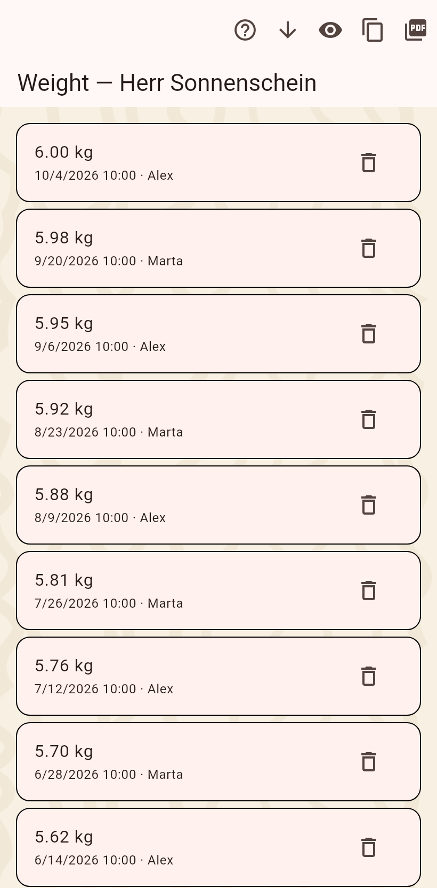

Every change is kept. A field's history lists its values, the timeline lists everything about one cat or home in order, and a number's history is drawn as a curve.

One field's values over time, newest first, each with its date and author. A tap corrects a value: the new one takes its place, the old one is hidden. The bin removes a value, the arrow brings a hidden one back, the eye shows hidden values. Copy the list as text or share it as a PDF.
Everything that ever happened to one cat or home, newest first: values, photos, moves, chore ticks, appointments. A tap on a move opens the move dialog set to that move; an appointment or a chore opens its editor; a chore's done day opens that chore's log.
A number or a measurement, weight above all, as a curve with the measured points, a smoothed line and a trend, over a week, a month, a year, everything or a range of your own. "Copy as image" puts it on the clipboard for a messenger.